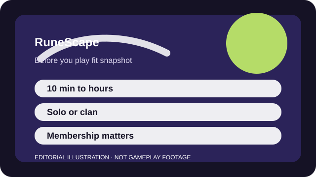

BEFORE YOU PLAY
What this page is and is not
This is a sourced editorial fit profile. It is designed to help with a yes-or-no play decision, and it does not claim a scored hands-on review.
The game is easiest to judge through quests and a couple of skills, not by graphics alone. If slow, persistent progress sounds relaxing, RuneScape can be remarkably sticky.
The first-session loop to judge is simple: Quest, train skills, and set personal goals that slowly turn into a persistent account identity.
Skill levels, quests, gear, and self-set projects make progression durable even when you switch activities often.

FIT SNAPSHOT
RuneScape at a glance
| Genre | Online role-playing game |
|---|---|
| Platforms | PC, Mobile |
| Business model | Free entry with membership unlocking much of the fuller experience. |
| Typical session | 10 minutes to several hours across quests, skills, and long-term account goals. |
| Play style | open-ended account progression |
| Learning barrier | RuneScape's interface and decades of accumulated systems can feel wide and old-school before they feel liberating. |
| Social shape | It works solo, socially, or half-passively depending on what you are doing and how intensely you want to engage. |
WHO IT FITS
Best fit, likely friction, and the social reality
players who want open-ended goals, account persistence, and lots of low-intensity activities
players who need cutting-edge presentation or a narrow focused loop
It works solo, socially, or half-passively depending on what you are doing and how intensely you want to engage.
Skill levels, quests, gear, and self-set projects make progression durable even when you switch activities often.
FIRST SESSION PLAN
How to test the fit in one evening
- Follow the introductory quest path instead of wandering until every menu feels equally important.
- Choose two skills you honestly enjoy so early progress feels personal rather than obligatory.
- Use pathing aids and tooltips until the interface stops fighting you.
- Treat membership as a later decision rather than a day-one purchase.
Use the first session to answer these fit questions instead of judging rank, win rate, or store value immediately.
- Do you value persistent progress more than fast spectacle?
- Will a legacy-style interface annoy you before the systems can pay it back?
- Do you want a game that can be played in calm, low-intensity windows at times?
TIME, COST, AND COMMITMENT
What you are really signing up for
| Session budget | 10 minutes to several hours across quests, skills, and long-term account goals. |
|---|---|
| Social demand | It works solo, socially, or half-passively depending on what you are doing and how intensely you want to engage. |
| Progression shape | Skill levels, quests, gear, and self-set projects make progression durable even when you switch activities often. |
| Spending pressure | The free layer is real, but membership is the gateway to much of what long-term players value most. |
RuneScape can fill tiny breaks or huge long-term projects, which is both its strength and its biggest commitment risk.
The free layer is real, but membership is the gateway to much of what long-term players value most.
SOURCES AND LIMITS
What was checked, and what can change
- Membership bundles and bond value can change how generous the free layer feels.
- Seasonal events may shift what new players notice first.
- Tutorial or interface improvements can reduce some early friction over time.
This profile uses official game pages and defensible general product knowledge to frame the player fit. It does not claim live testing across every platform, accessibility need, or current event rotation.